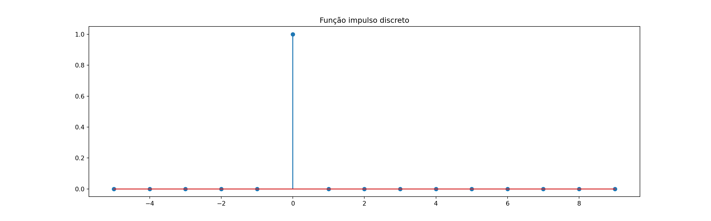
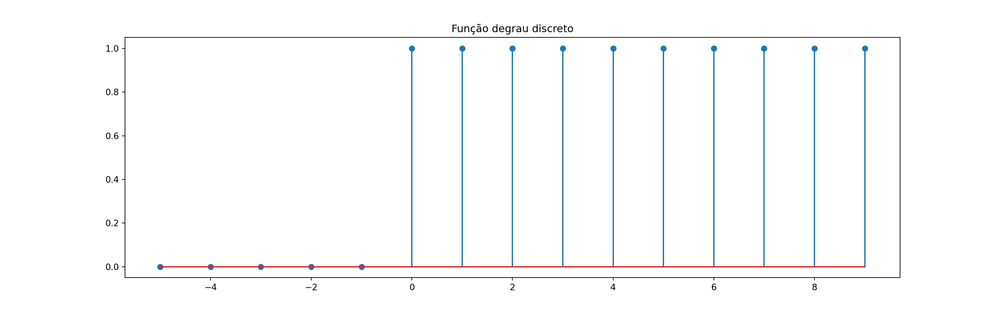
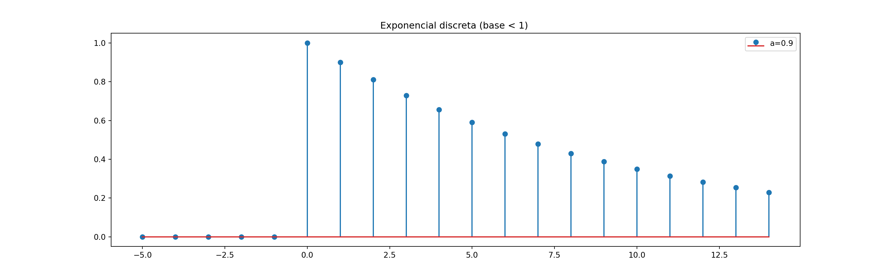
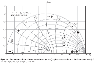

Capítulo 7 Transformada \(\mathcal{Z}\)
A transformada \(\mathcal{Z}\) é a transformada de Laplace aplicada a sistemas de tempo discreto.
Um sinal discreto possui uma e somente uma transformada \(\mathcal{Z}\). Usualmente denotamos: \[\begin{align} Y(z) &= \mathcal{Z}\{y[k]\} \end{align}\]
Ou em notação inversa (semelhante à transformada inversa de Laplace): \[\begin{align} y[k] &= \mathcal{Z}^{-1}\{y[k]\} \end{align}\]
A variável complexa \(z\) desempenha papel semelhante à frequência complexa \(s\) na transformada de Laplace. Note porém, que \(z\) é uma variável contínua, enquanto que o tempo \(k\) para sinais discretos é uma variável discreta.
A relação entre \(s\) e \(z\) é dada pela equação fundamental: \[ z = \exp(sT) \]
Onde \(T\) é o período de amostragem sobre o qual o sinal discreto está submetido.
7.1 Transformada \(\mathcal{Z}\)
A transformada \(\mathcal{Z}\) da sequência \(x[k]\) é definida como:
\[\begin{align*} \mathcal{Z}\{x[k]\} = X(z) =\sum_{k=0}^\infty x[k]\,z^{-k} \end{align*}\]
Sinal discreto: \(k \in \mathbb{Z}\) \[\begin{align*} \mathcal{Z}\{f[k-1]\} = z^{-1}F(z) \end{align*}\]
Equações de diferenças:
\[\begin{align*}
y[k]&=-a_1y[k-1]-a_2y[k-2]+b_0u[k]+b_1u[k-1]\\&+b_2u[k-2]
\end{align*}\]
import numpy as np
y = np.zeros((10,))
y[0] = 0
y[1] = 1
for k in np.arange(2,10):
y[k] = y[k-1]+y[k-2]
print(y)## [ 0. 1. 1. 2. 3. 5. 8. 13. 21. 34.]Função de transferência discreta:
\[\begin{align}
\displaystyle\frac{Y(z)}{U(z)} = \frac{b_0+b_1z^{-1}+b_2z^{-2}}{1+a_1z^{-1}+a_2z^{-2}}
\end{align}\]
7.2 Transformadas elementares
Para a maioria dos resultados, usamos a fórmula da PG infinita:
\[\begin{align} 1+q+q^2+q^3+\ldots = \frac{1}{1-q} \end{align}\]
Impulso discreto - \(\delta[k]\)
\[\begin{align} \mathcal{Z}\{\delta[k]\} = 1 \end{align}\]
Códigos Python para desenhar o sinal.
Imports:
Cria o vetor de tempo e uma função rápida para avaliar o impulso de acordo com o tempo.
Plotagem:
from matplotlib import pyplot as plt
plt.figure(figsize=(16,5))
plt.stem(k,delta(k))
plt.title('Função impulso discreto');
A função de plotagem “stem” é um pouco melhor para ilustração de sinais discretos.
Degrau discreto - \(u[k]\)
\[\begin{align} \mathcal{Z}\{u[k]\} = \frac{z}{z-1} = \frac{1}{1-z^{-1}} \end{align}\]
degrau = lambda k: k>=0
plt.figure(figsize=(16,5))
plt.stem(k,degrau(k))
plt.title('Função degrau discreto');
Exponencial discreta - \(a^k\, u[k]\)
\[\begin{align} \mathcal{Z}\{a^k\,u[k]\} = \frac{z}{z-a} = \frac{1}{1-az^{-1}} \end{align}\]
a = 0.9
k = np.arange(-5,15)
expo = lambda k: np.real(a**k * degrau(k))
plt.figure(figsize=(16,5))
plt.stem(k,expo(k), label = f'a={a}');
plt.title('Exponencial discreta (base < 1) ');
plt.legend();
Experimente diferentes valores de \(a\) e analise o que acontece. Inclusive valores imaginários.
7.3 Propriedades
As propriedades mais importantes da transformada \(\mathcal{Z}\) são basicamente as mesmas da transformada de Laplace:
Linearidade
\[\begin{align} k_1\,x_1[k] + k_2\,x_2[k] \longleftrightarrow k_1\,X_1(z) + k_2\,X_2(z) \end{align}\]
Convolução
Essa propriedade é a que permite avaliar a resposta de um sistema LIT discreto a uma entrada.
É essencialmente a mesma do domínio contínuo, exceto que precisamos redefinir convolução para sinais discretos.
\[\begin{align} x[k]*h[k] = \sum_{n=-\infty}^{\infty} x[n]h[k-n] \longleftrightarrow X(z)H(z) \end{align}\]
Uma consequência disso é que as regras de diagramas de blocos para sistemas discretos são as mesmas dos sistemas contínuos.
Deslocamento e condição inicial
\[\begin{align} x[k+1] \longleftrightarrow zX(z)-zx[0] \end{align}\]
Podemos deduzir outras transformadas não-exponenciais a partir das propriedades.
Por exemplo: \[\begin{align} \mathcal{Z}\{A\,\cos(\omega k)\} &= \mathcal{Z}\left\{\frac{Ae^{j\omega k}}{2}+\frac{Ae^{-j\omega k}}{2}\right\}\\[10pt] &= \frac{Az}{2(z-e^{j\omega})}+\frac{Az}{2(z-e^{-j\omega})}\\ &= \frac{Az(z-\cos\omega)}{z^2+2z\cos\omega+1} \end{align}\]
7.4 Transformada \(\mathcal{Z}\) inversa
Expansão em frações parciais de \(\displaystyle\frac{X(z)}{z} \longrightarrow x[k]\).
Exemplo: use expansão em fraçõs parciais para determinar a transformada inversa de
\[Y(z) = \displaystyle\frac{28(z+1)(z-0.7)}{(z-1)(z-0.9)(z+0.9)}\]
Solução com Python:
Define o problema. Observe diferentes formas de montar os polinômios
Verifique a forma como foi definida \(Y(z)/z\)
Encontra a expansão com a função “residue”.
Note que este resultado é numérico. Para recuperá-lo no contexto simbólico, pode-se usar o seguinte código (há outras formas de fazê-lo)
Expansão encontrada: \[\begin{align} Y(z) = \frac{1.46 z}{z + 0.9} - \frac{65.68 z}{z - 0.9} + \frac{88.42 z}{z - 1.0} - 24.2 \end{align}\]
Portanto: \[\begin{align*} y[k] &= 1.46(-0.9)^k\, u[k] - 65.68(0.9)^k\,u[k]\\&\,+88.42u[k]-24.2\delta[k] \end{align*}\]
Usamos a transformada inversa para ter um sentimento qualitativo da resposta do sistema e para explicar o que está acontecendo com a dinâmica. Para efeitos de cálculo mesmo, apenas resolvemos numericamente as equações de diferenças.
Para projeto de controle, o ideal é converter a função para equação de diferenças.
7.5 Relação entre \(s\) e \(z\)
\[\begin{align} z &= e^{sT} \end{align}\]
- Eixo imaginário \(\longrightarrow\) circunferência unitária
- SPE/SPD \(\longrightarrow\) interior/exterior do círculo unitário
- Origem \(s=0\) \(\longrightarrow\) \(z=1\)
- Parte real constante \(\longrightarrow\) circunferências
- Parte imaginária constante \(\longrightarrow\) linhas radiais

7.6 Teorema do valor final
\[\begin{align} \lim_{k\rightarrow \infty} x[k] = \lim_{z\rightarrow 1} (1-z^{-1})\,X(z) \end{align}\]
desde que todos os pólos de \(X(z)\) estejam dentro do círculo unitário.
7.7 Exercícios
- Determine a transformada inversa de \(Y(z)\)
A = randint(2,50)
B = (-1)**randint(1)*randint(1,50)
C = randint(1,10)
Y = A/z + B*z/(C*z-1)
Y_str = sp.latex(Y)\[\begin{align} Y(z) = \frac{48 z}{9 z - 1} + \frac{49}{z} \end{align}\]
Utilize o código para gerar outros problemas e exercitar.
- Usando Python, calcule o valor final do sinal cuja transformada \(\mathcal{Z}\) é dada. Demonstre manualmente como esse resultado é calculado.
#
num = randint(1,100)*sp.prod([z*randint(2,10)-1 for i in range(3)] )
num = sp.expand(num)
den = sp.expand(sp.prod([z*randint(2,8)-1 for i in range(4)] ) )
G= num/den
G_str = sp.latex(G)\[\begin{align} G(z) = \frac{896 z^{3} - 688 z^{2} + 136 z - 8}{980 z^{4} - 721 z^{3} + 195 z^{2} - 23 z + 1} \end{align}\]
- Deduza a transformada inversa da função \[\begin{align} X(z) &= \frac{(A+jB)z}{z-\alpha \,e^{j\beta}} + \frac{(A-jB)z}{z-\alpha \,e^{-j\beta}} \end{align}\]